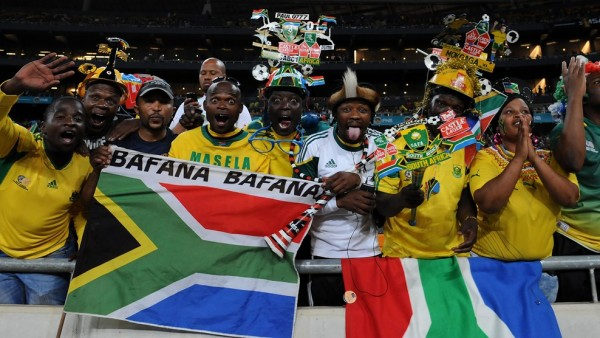
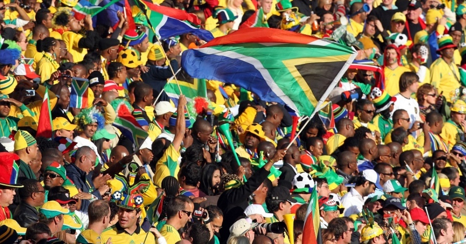

A história do futebol africano na Copa do Mundo é uma jornada fascinante de superação, talento puro, festas inesquecíveis nas arquibancadas e momentos dramáticos que ficaram gravados na memória de qualquer fã do esporte. O continente passou do status de "zebra" nas primeiras edições para se tornar uma força temida e respeitada globalmente.
Seleção
HISTÓRIA
A melhor Copa
do Mundo
África do Sul
A melhor campanha da África do Sul em Copas do Mundo veio na Coreia do Sul/Japão 2002, quando alcançou o 17º lugar e conquistou a primeira vitória de sua história no torneio. Após um eletrizante empate por 2 a 2 com o Paraguai na estreia, os sul-africanos venceram a Eslovênia por 1 a 0, com gol de Siyabonga Nomvethe logo aos quatro minutos de jogo.
2002
Na Copa da Coreia e do Japão, os sul-africanos já haviam mostrado força ao buscar um empate por 2 a 2 contra o Paraguai na estreia. No jogo seguinte, contra a Eslovênia, veio o momento de quebrar o tabu e fazer história.
2010
Na última rodada da fase de grupos de 2010, os sul-africanos enfrentavam a poderosa França (então vice-campeã mundial). Mesmo com a enorme pressão psicológica de correr o risco de ser o primeiro país-sede eliminado na primeira fase, os Bafana Bafana jogaram com a alma.


Momentos inesquecíveis
01
Era o primeiro jogo da primeira Copa no continente africano, no Soccer City lotado. Aos 10 minutos do segundo tempo, Siphiwe Tshabalala recebeu um passe em profundidade pela esquerda e soltou uma bomba cruzada, no ângulo do goleiro mexicano.
02
A África do Sul chegou à última rodada da fase de grupos de 2010 precisando de um milagre para se classificar, enfrentando a gigante (e então vice-campeã do mundo) França. Os sul-africanos jogaram uma partida perfeita.
03
Na Copa da Coreia e do Japão, os sul-africanos tinham um time muito técnico. Após arrancarem um empate madrugador contra o Paraguai na estreia, eles enfrentaram a Eslovênia na segunda rodada. Logo aos 4 minutos de jogo, Siyabonga Nomvethe desviou um cruzamento meio sem jeito (com a coxa/ombro), mas a bola balançou as redes.
04
A estreia absoluta do país em Copas aconteceu na França, em 1998, poucos anos após o fim do apartheid. Após perderem na estreia para os donos da casa, os sul-africanos enfrentaram a forte Dinamarca na segunda rodada.
Detalhes
culturais do país